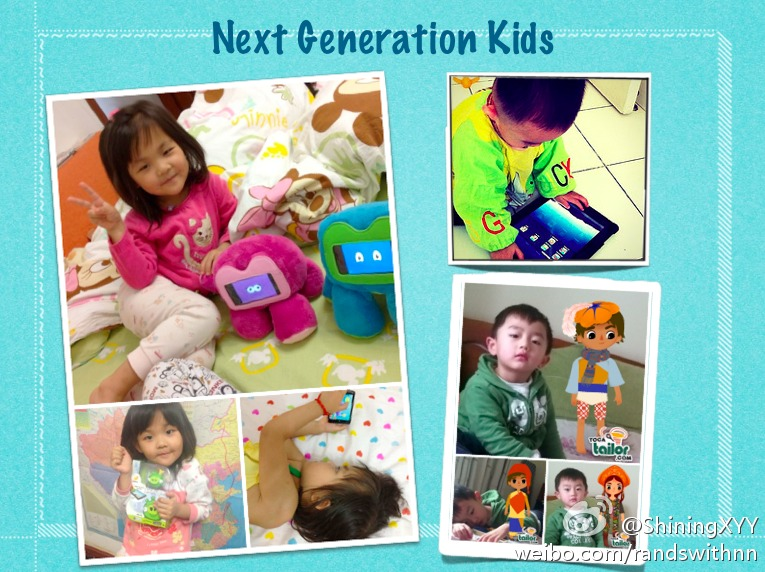

午餐会的PPT//@ShiningXYY:@tinyfool 那些不懂iPad把责任都推给iPad绝对抵制不让孩子接触iPad的人，你们抵挡不住，零零后很快就登上舞台了！还要@陈昊芝 等移动互联网人，不要只是给孩子玩捕鱼达人这样的弱智又费眼的游戏了，Kid Apps有很大的想象空间~~最后呼吁玩具厂商，你们要改变世界，就找@小林
@深圳湾的炫姐姐:
这个月我的主要工作任务就是总结、分享。今天的内部分享，总结了一些我知道的儿童应用和外设玩具。其中提及和未提及的朋友，感谢你们，推动了中国教育的革新。@小林 (特别感谢) @斑马骑士 @工程师爸爸 @RyeStudio @乐豚YippeeArts @瑞豆乐园 @宝宝巴士 ...  网页链接
网页链接
- 